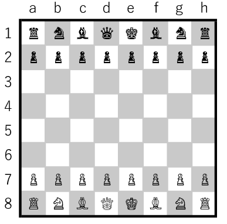
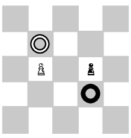
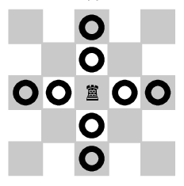
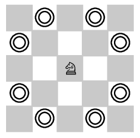
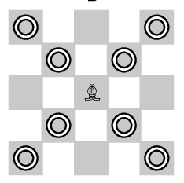
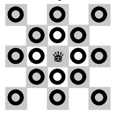
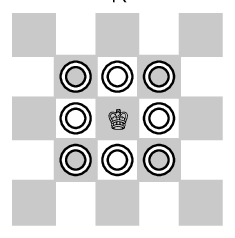
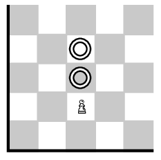
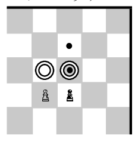

目次
用語
キャスリング
キングとルークを交差させるように動かすこと。駒の動かし方参照。
アンパッサン
相手の 2 マス進んだポーンを通過するように取ること。駒の動かし方参照。
file; ファイル
盤面の縦長の列。クイーンサイドの端から a, b, c, .., h と番号をふる。
rank; ランク
盤面の横長の行。黒側の端から 1, 2, ..., 8 と番号をふる。
チェック; 王手
対処しなければ次のターンで相手にキングを取られる状態。
チェックメイト; 詰み
このターンで自分がどんな手を打っても相手のターンで自分のキングが取られる状態。
ステイルメイト
チェックはされていないが、自らチェックされにいく他に駒の動かしようがない状態。一般にこのとき引き分けとする。
リザイン; 投了
自ら負けを認めること。盤面において優勢であってもプレーヤーのリザインを適用する。
プロモーション
ポーンが一番端の rank までたどり着いたときに、ルーク・ナイト・ビショップ・クイーンのいずれかに成り上がること。よほどの理由がない限りクイーン。
クイーンサイド
初期配置のクイーンがいる file の方向。つまり file が減る方向。
キングサイド
初期配置
駒の動かし方
P ポーン
R ルーク
N ナイト
B ビショップ
Q クイーン
K キング
ポーンの最初
アンパッサン
キャスリング

棋譜の書き方
In order to study chess properly, and also to play in leagues and tournaments, you need to be able to read and write chess moves. There are a few ways to record chess moves, but on this site we will be using standard algebraic notation, which is the notation required by FIDE (the international chess federation).
-- The board
In algebraic notation, we use a system of alphanumeric co-ordinates to identify each square. The ranks (horizontal rows) are identified with numbers starting from white's side of the board, and the files (vertical columns) are identified by letters, starting from white's left. On the board below, co-ordinates are displayed for every square.
a b c d e f g h
-------------------------------
8 | a8| b8| c8| d8| e8| f8| g8| h8| 8
-------------------------------
7 | a7| b7| c7| d7| e7| f7| g7| h7| 7
-------------------------------
6 | a6| b6| c6| d6| e6| f6| g6| h6| 6
-------------------------------
5 | a5| b5| c5| d5| e5| f5| g5| h5| 5
-------------------------------
4 | a4| b4| c4| d4| e4| f4| g4| h4| 4
-------------------------------
3 | a3| b3| c3| d3| e3| f3| g3| h3| 3
-------------------------------
2 | a2| b2| c2| d2| e2| f2| g2| h2| 2
-------------------------------
1 | a1| b1| c1| d1| e1| f1| g1| h1| 1
-------------------------------
a b c d e f g h
The co-ordinates are the same whether you are looking at the board from white's perspective or black's.
-- Recording a move
With the exception of the knight, each piece is represented by the first letter of its name, capitalised. Knight starts with the same letter as king, so for the knights we use the letter N instead. When we record a move, we record the piece that is being moved, and the square that the piece is being moved to. For example:
Bc4 - Bishop moves to the c4 square.
Nf3 - Knight moves to the f3 square.
Qc7 - Queen moves to the c7 square.
The only exception to this is pawn moves. When a pawn moves, we don't normally bother to record the P, just the square that the pawn is moving to. For example:
e4 - pawn moves to the e4 square.
g6 - pawn moves to the g6 square.
If the pawn has reached the far side of the board and promoted, use an '=' sign to show which piece it was promoted to. For example:
b8=Q - pawn moves to the b8 square and promotes to a queen.
h1=N - pawn moves to the h1 square and promotes to a knight.
Simple enough so far. There are also a couple of extra symbols used to indicate certain things about a move. To indicate a capture, we place an 'x' symbol beween the piece and the square, for example:
Rxf5 - Rook captures a piece on the f5 square.
Kxd2 - King captures a piece on the d2 square.
When a pawn is capturing, we use the letter of the file it is moving from, then the x, then the square it is moving to. For example:
gxf6 - Pawn on the g-file captures a piece on the f6 square.
exd5 - Pawn on the e-file captures a piece on the d5 square.
If the pawn is making an en passant capture, we record the square that the pawn finished on, not the square of the captured pawn. You can also add 'e.p.' after the move to indicate en passant if you want, but this isn't mandatory. For example:
exd6 - Pawn captures a pawn on d5 en passant. The pawn finishes its move on d6.
gxh6 e.p. - Pawn captures a pawn on h5 en passant. The pawn finishes its move on h6.
To indicate that a move is check, just add a '+' symbol on the end. If it's a double check, you can add ++ if you like, but just one will do. If the it's a checkmate, use the '#' symbol instead. Here are some examples:
Ba3+ - Bishop moves to a3 and gives check.
Qxh7# - Queen captures a piece on h7 and checkmates the black king.
f3+ - Pawn moves to f3 and gives check.
Sometimes, two different piece of the same type could move to the same square. To specify which piece is to move, add the letter of the file the piece is moving from. Here are some examples:
Rad1 - Rook on the a-file moves to d1.
Nbxd2 - Knight on the b-file captures a piece on d2.
Rfe1+ - Rook on the f-file moves to e1 and gives check.
What about if both pieces are on the same file as well? In this case, put the number of the starting rank for the piece that is moving, instead of the file letter. Here are some examples:
R7e4 - Rook on the seventh rank moves to e4.
N1xc3 - Knight on the first rank captures a piece on c3.
Castling is recorded differently to the other moves. For kingside castling, record it as O-O and for queenside castling, record it as O-O-O.
When a game has been annotated, some symbols are used to indicate that a particular move is good or bad. We don't normally use these when recording a game in a tournament (it might be offputting to your opponent to see what you think of his moves). The symbols are as follows:
! - Good move.
!! - Brilliant move.
? - Poor move.
?? - Terrible move.
!? - Interesting move.
?! - Dubious move.
from www.chessstrategyonline.comcontent/tutorials/basic-chess-concepts-chess-notation